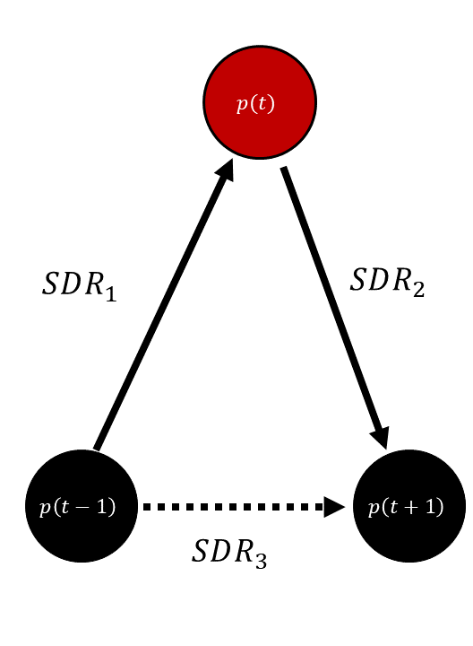
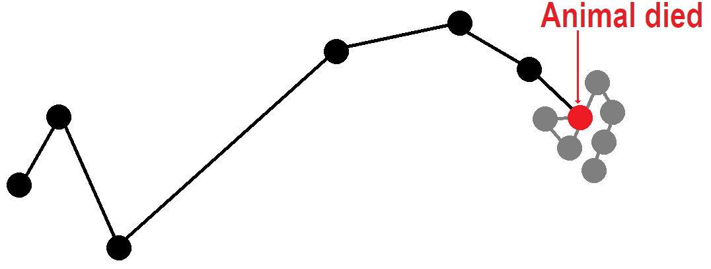

GPS Data Cleaning
Analysis of Animal Movement Data with R (with Johannes Signer)
![]()
February 15, 2026
Outline
Collecting GPS Data
Cleaning GPS Data
Other Data Types
Collecting GPS Data
How does GPS work?
(Watch this during lecture)
How does GPS work?
- Satellites broadcast the time
- Device compares with current time to calculate distance
- Uses trilateration to calculate location
- Requires an extra satellite to correct time drift
Collecting GPS Data
| collar_ID | x | y | t | n_satellite | DOP |
|---|---|---|---|---|---|
| 123 | … | … | 12:01:23 | 6 | 5.5 |
Collecting GPS Data
| collar_ID | x | y | t | n_satellite | DOP |
|---|---|---|---|---|---|
| 123 | … | … | 12:01:23 | 6 | 5.5 |
| 123 | … | … | 13:01:17 | 5 | 7 |
Collecting GPS Data
| collar_ID | x | y | t | n_satellite | DOP |
|---|---|---|---|---|---|
| 123 | … | … | 12:01:23 | 6 | 5.5 |
| 123 | … | … | 13:01:17 | 5 | 7 |
| 123 | … | … | 14:01:21 | 6 | 7 |
Collecting GPS Data
| collar_ID | x | y | t | n_satellite | DOP |
|---|---|---|---|---|---|
| 123 | … | … | 12:01:23 | 6 | 5.5 |
| 123 | … | … | 13:01:17 | 5 | 7 |
| 123 | … | … | 14:01:21 | 6 | 7 |
| 123 | … | … | 14:01:19 | 7 | 4 |
Collecting GPS Data
| collar_ID | x | y | t | n_satellite | DOP |
|---|---|---|---|---|---|
| 123 | … | … | 12:01:23 | 6 | 5.5 |
| 123 | … | … | 13:01:17 | 5 | 7 |
| 123 | … | … | 14:01:21 | 6 | 7 |
| 123 | … | … | 14:01:19 | 7 | 4 |
| 123 | – | – | 15:01:30 | 0 | – |
Collecting GPS Data
| collar_ID | x | y | t | n_satellite | DOP |
|---|---|---|---|---|---|
| 123 | … | … | 12:01:23 | 6 | 5.5 |
| 123 | … | … | 13:01:17 | 5 | 7 |
| 123 | … | … | 14:01:21 | 6 | 7 |
| 123 | … | … | 14:01:19 | 7 | 4 |
| 123 | – | – | 15:01:30 | 0 | – |
| 123 | … | … | 16:01:27 | 4 | 8 |
Dilution of Precision (DOP)
Watch these later
Dilution of Precision (DOP)
Measure of potential loss of precision due to satellite geometry
- PDOP
- Position parameters (lat, lon, alt)
- Position parameters (lat, lon, alt)
- HDOP
- Horizontal parameters (lat, lon)
- Horizontal parameters (lat, lon)
- VDOP
- Vertical parameter (alt)
- Vertical parameter (alt)
- TDOP
- Time parameter (time correction)
Dilution of Precision (DOP)
Lower is better!
Rough guidelines (by BJS):
- 1–2: Excellent
- 2–4: Very Good
- 4–6: Good
- 6–8: Fair (I typically filter these for elk)
- 8–10: Poor
- >10: Very poor
Missing fixes
Small % of random missing fixes are typically not a problem
Many causes of missing fixes are non-random
- e.g., dense canopy creates habitat-biased missing fixes
Some discussion of this in the literature
- Frair et al. (2010)
- Smith et al. (2018)
Missing fixes
{kind=link}
{kind=link}
BEWARE!
Cleaning GPS Data
Methods for Cleaning
By hand
Scripted routine (Bjørneraas et al. 2010)
amtworkflow
amt Workflow
General cleaning framework largely developed by Tal Avgar.
Vignette in preparation.
We welcome feedback on usage or other suggestions!
amt Workflow
- Remove fixes before the device was on the animal
- Remove fixes influenced by the capture
- Remove locations in unreachable habitat
- Filter low quality fixes
- Flag low quality duplicates
- Flag unreasonably fast steps
- Flag fast roundtrips
- Flag mortality/drop-off clusters
1. Remove fixes before the device was on the animal
Pretty straightforward.
trk %>%
tracked_from_to(from = ymd_hms("2021-01-01 07:00:00"),
to = ymd_hms("2021-12-31 19:00:00"))2. Remove fixes influenced by the capture
Define a time period to remove from the beginning of the track.
trk %>%
remove_capture_effect(start = days(2))Used to clean post-capture behavior modifications.
3. Remove locations in unreachable habitat
No specific function. amt::extract_covariates() will help attach a covariate of your choice, and then simply use dplyr::filter() to remove unwanted values.
trk %>%
extract_covariates(landuse) %>%
filter(!landuse %in% 11:12)E.g., terrestrial animals in the ocean, fish on land, etc.
4. Filter low quality fixes
No specific function. Simply use dplyr::filter() to remove precision values below a desired threshold.
trk %>%
filter(dop < 10)5. Flag low quality duplicates
Define a time window of size \(\gamma\). Treat any two fixes within \(\pm \gamma/2\) as duplicates. Keep only the record with the better (lower) precision metric.
trk %>%
flag_duplicates(gamma = minutes(5), DOP = "dop")Note that if you are using a metric where bigger is better (e.g., number of satellites instead of DOP), multiply it by -1 first.
Also note that this function flags rather than filters locations. To filter:
trk %>%
flag_duplicates(gamma = minutes(5), DOP = "dop") %>%
filter(!duplicate_)6. Flag unreasonably fast steps
This is where things get tricky.
You will likely not have perfectly regular timesteps by this point.
You might think you should calculate “speed” as \(\Delta p / \Delta t\), but that implies that distance scales linearly with time.
Briefly, displacement (under a random walk) does not scale linearly with time, but rather squared displacement does scale linearly with time.
Solution: use squared displacement rate to define “fast steps”.
See ?amt::calculate_sdr and ?amt::get_displacement.
6. Flag unreasonably fast steps
Choose an SDR, \(\delta\), so that steps with \(SDR > \delta\) are flagged.
Units are assumed to be \(m^2/s\).
trk %>%
flag_fast_steps(delta = 10000)Note that this does not remove those steps automatically.
trk %>%
flag_fast_steps(delta = 10000) %>%
filter(!fast_step_)E.g., 10000 \(m^2/s\) implies a displacement of 6 km in 1 hour but only 8.5 km in 2 hours.
7. Flag fast roundtrips
It is more likely that a single location is imprecise if it implies an unrealistically fast out-and-back round trip. In that case, the user might be willing to scale the threshold SDR.
\(\delta\) gives the base SDR and \(\epsilon\) is the scaling factor.
7. Flag fast roundtrips
Position at time \(t\) is flagged if:
\(SDR_1 > \delta/\epsilon\) and \(SDR_2 > \delta/\epsilon\)
\(SDR_1 > \epsilon SDR_3\) and \(SDR_2 > \epsilon SDR_3\)
Note that \(\epsilon\) both decreases \(\delta\) and increases \(SDR_3\).

7. Flag fast roundtrips
trk %>%
flag_roundtrips(delta = 10000, epsilon = 5)This function does not remove locations.
trk %>%
flag_roundtrips(delta = 10000, epsilon = 5) %>%
filter(!fast_roundtrip_)8. Flag mortality/drop-off clusters
If an animal with an active collar dies OR an active collar drops off the animal, we often don’t know exactly when the last valid location was.

8. Flag mortality/drop-off clusters
We define defunct clusters as those with no movement at the end of a track, with these parameters:
\(\zeta\): the tolerance for steps to be considered of length 0
- (e.g., \(\zeta = 5\) allows all points within 5 m to be considered stationary)
\(\eta\): the minimum number of consecutive stationary points to form a cluster
\(\theta\): the minimum amount of time elapsed to form a cluster
trk %>%
flag_defunct_clusters(zeta = 10, eta = 5, theta = hours(24)) %>%
# Remove flagged clusters
filter(!defunct_cluster_)Other Data Types
ARGOS Satellite Tags
Data are labelled with a location class rather than DOP.
Error distributions are well studied for each location class (bivariate t-distributions).
Often modeled with an SSM (e.g., Jonsen et al. 2005).
- Implemented in R package
bsam(https://github.com/ianjonsen/bsam). - Newer implementation in R package
aniMotum(https://github.com/ianjonsen/aniMotum).
- Implemented in R package
Passive Acoustic Telemetry
Acoustic signals are more easily corrupted than electromagnetic waves, resulting in the wrong tag ID being recorded.
- Type A false detections are of tag IDs not in the study (easy to discard)
- Type B false detections are of tag IDs in the study (hard to distinguish from real data)
Some work on this in the literature (e.g., Simpfendorfer et al. 2015).
- Most rely on a speed filter (use SDR!) or coarse temporal scale summary stats.
See also R package
glatos(https://gitlab.oceantrack.org/GreatLakes/glatos).
Questions?
References
Bjørneraas, K., B. Moorter, C. M. Rolandsen, et al. (2010). “Screening Global Positioning System Location Data for Errors Using Animal Movement Characteristics”. En. In: The Journal of Wildlife Management 74.6, pp. 1361-1366. DOI: 10.1111/j.1937-2817.2010.tb01258.x.
Frair, J. L., J. R. Fieberg, M. Hebblewhite, et al. (2010). “Resolving issues of imprecise and habitat-biased locations in ecological analyses using GPS telemetry data”. In: Philosophical Transactions of the Royal Society B-Biological Sciences 365.1550. ISBN: 0962-8436, pp. 2187-2200. DOI: 10.1098/rstb.2010.0084.
Jonsen, I. D., J. M. Flemming, and R. A. Myers (2005). “Robust state-space modeling of animal movement data”. In: Ecology 86.11. ISBN: 0012-9658, pp. 2874-2880. DOI: 10.1890/04-1852.
Simpfendorfer, C. A., C. Huveneers, A. Steckenreuter, et al. (2015). “Ghosts in the data: false detections in VEMCO pulse position modulation acoustic telemetry monitoring equipment”. En. In: Animal Biotelemetry 3.1, p. 55. DOI: 10.1186/s40317-015-0094-z. (Visited on Nov. 13, 2022).
Smith, B. J., K. M. Hart, F. J. Mazzotti, et al. (2018). “Evaluating GPS biologging technology for studying spatial ecology of large constricting snakes”. In: Animal Biotelemetry 6, p. 1. DOI: 10.1186/s40317-018-0145-3.